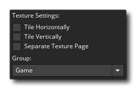

当你用 GameMaker Studio 2 创建游戏时，你肯定会创建图形——精灵、图块和字体——来配合它。这些图形存储在 GameMaker Studio 2 根据游戏中包含的所有图像资源为你构建的 纹理页 上。下面是一个完整的纹理页面示例： 
正如你所看到的，游戏的图形都是以这样的方式混合在一起的，他们都填充在一个 2 的倍数大小的页面上，如 512 x 512、1024 x 512 等…最大大小为 4096 x 4096 像素的页面。注意，一个纹理页面的最大大小取决于所选择的导出平台，因为一些平台不允许超过 2048 x 2048 像素的页面。值得注意的,即使你有一个资源规模大于 4096 像素或选择平台的最大尺寸——这将被 减小 一半 （如果必要再次减半）直到它适合最大页面大小，它 不 会在各纹理被分成几部分。
同样值得注意的是，如果你的精灵周围有很多空白的空间（例如：透明像素），它们将被默认裁剪，以删除任何“不可见”的像素，并将尽可能多的图像打包到一个纹理页上。如果这不是你希望发生的，那么你需要从 纹理组 窗口禁用它。
纹理设定
精灵资源编辑器 有一个标题为 纹理设置 的部分，如下所示： 
在这里，你可以定义图像如何存储在纹理页、它是专门用于 3D 物体的图像还是必须单独存储以及它必须被分配到哪个纹理页（如果有的话）。前两个选项，水平平铺图块 和 垂直平铺图块 与图像的边缘在纹理页上的创建方式有关。图像是图块将从相对边的边缘（水平或垂直）添加边缘，而如果未选择平铺，则将锁定子画面并重复边缘像素（注意，图块集也具有输出边框宽度的设置，图块集属性 中发现同样的事情,仅适用于图块集中的每个图块）。下面的图像说明这一点: 
这些设置下面是 独立的纹理页 设置。此选项将强制 GameMaker Studio 2 将此图像放在其自己唯一的纹理页面上，并且没有与此相关的选项，因为通过代码直接控制平铺或夹紧。 这常用于纹理化的 3D 模型（在这种情况下纹理应该是 2 的次方数，例如：128 x 128 或 512 x 512），但是你可以使用它来强制将任何图像绘制到其自己的唯一页面。
现在，当你的游戏很大、有很多艺术资源时，可能 GameMaker Studio 2 自动创建这些页面的方式并不能最大限度地利用平台设备，因为如果你的游戏的一个房间需要来自 4 个不同纹理页面的资源，设备必须不断地将这些页面替换到（或从）内存（取出），这可能会导致性能下降。为此，你可以选择告诉 GameMaker Studio 2 在特定纹理页面上放置哪些图像，最终目的是最大限度地减少在游戏中完成的交换次数（可以从 纹理组 窗口添加纹理页）。值得注意的是，在 游戏选项 中可以找到各个平台的选项卡中，有一个按钮允许你查看已定义的纹理页面，就像为每个平台创建的那样。
如果你的游戏中的纹理 大于 纹理页大小，则此图像将由 GameMaker Studio 2 自动缩小以使其适合纹理页。这意味着当你在 Windows、Ubuntu（Linux）或 MacOS 上测试游戏时，游戏可能看起来很好，因为你使用较大的纹理页面，但在iOS（或任何需要较小纹理页大小以获得最佳性能的其他目标上）纹理可能看起来很模糊或有人工制品。你必须确保你的图像能够适合你游戏将使用的最小纹理页大小，如果不能，那么你应该将它们分成较小的图像，然后在游戏中将它们绘制在一起，以便形成一个较大而完整的图像的错觉。